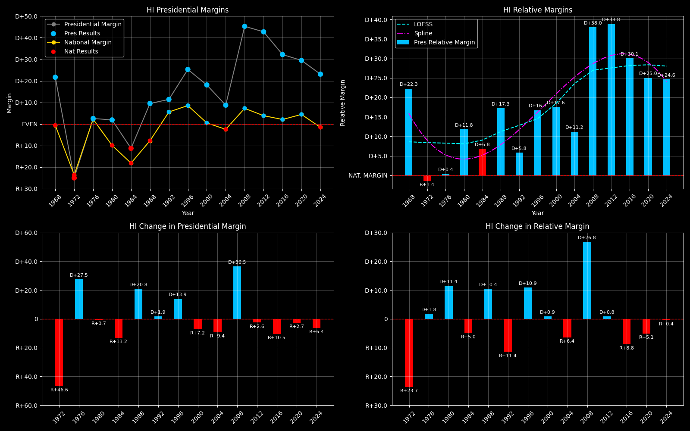

← Back to Map

Hawaii (HI) statewide
Hawaii (HI) — Data
| Year | D | R | Margin | Rel. Margin | Nat'l Margin | Margin Δ | Rel. Margin Δ | Nat'l Margin Δ |
|---|
| 1976 | 147,375 | 140,003 | D+2.6 | D+0.3 | D+2.3 | 0 | 0 | 0 |
| 1980 | 135,879 | 130,112 | D+2.2 | D+12.5 | R+10.3 | R+0.4 | D+12.2 | R+12.6 |
| 1984 | 147,154 | 185,050 | R+11.4 | D+6.8 | R+18.2 | R+13.6 | R+5.6 | R+7.9 |
| 1988 | 192,364 | 158,625 | D+9.6 | D+17.3 | R+7.7 | D+21.0 | D+10.4 | D+10.6 |
| 1992 | 179,310 | 136,822 | D+13.4 | D+6.2 | D+7.2 | D+3.8 | R+11.1 | D+14.9 |
| 1996 | 205,012 | 113,943 | D+28.6 | D+18.9 | D+9.6 | D+15.1 | D+12.7 | D+2.4 |
| 2000 | 205,286 | 137,845 | D+19.7 | D+19.1 | D+0.5 | R+8.9 | D+0.2 | R+9.1 |
| 2004 | 231,708 | 194,191 | D+8.8 | D+11.3 | R+2.5 | R+10.8 | R+7.9 | R+3.0 |
| 2008 | 325,871 | 120,566 | D+46.0 | D+38.4 | D+7.5 | D+37.2 | D+27.2 | D+10.0 |
| 2012 | 306,658 | 121,015 | D+43.4 | D+39.4 | D+4.0 | R+2.6 | D+0.9 | R+3.5 |
| 2016 | 266,891 | 128,847 | D+34.9 | D+32.6 | D+2.3 | R+8.5 | R+6.8 | R+1.7 |
| 2020 | 366,130 | 196,864 | D+30.1 | D+25.5 | D+4.5 | R+4.8 | R+7.0 | D+2.2 |
| 2024 | 313,044 | 193,661 | D+23.6 | D+25.1 | R+1.5 | R+6.5 | R+0.5 | R+6.0 |